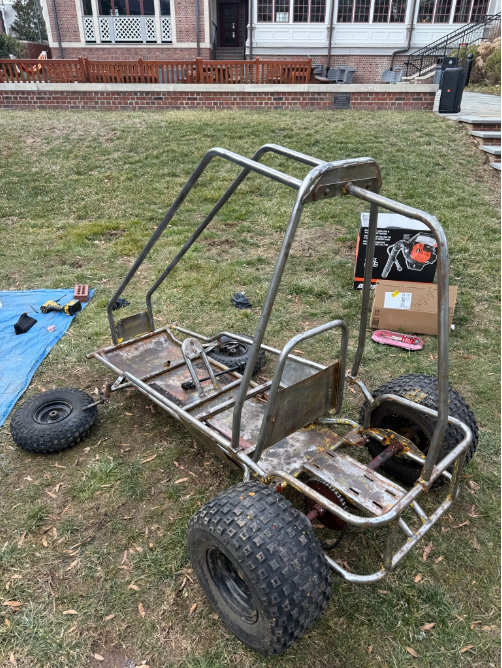
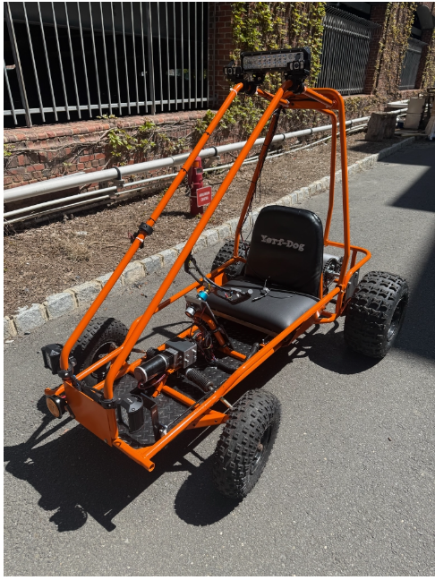
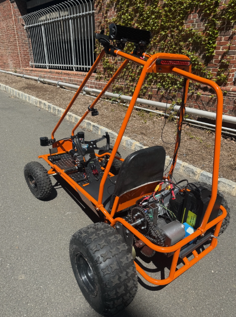

Project Overview
As my senior thesis at Princeton University, I led a team of three to transform a non-functional, rust-covered go-kart into a fully autonomous vehicle. This project combined mechanical redesign, electrical integration, control systems, and artificial intelligence to create a working autonomous platform.
We successfully demonstrated autonomous navigation on campus roads, showcasing the integration of computer vision, real-time control, and custom mechanical systems.
The Starting Point
The original Yerf-Dog go-kart was in rough shape:
- • Lots of bad/rusty paint covering the frame
- • Non-functioning gas engine (which we actually managed to fix before scrapping it)
- • Awful steering column with significant play and poor feedback
- • Old deflated wheels and worn components throughout
Drivetrain Overhaul
Electrification
We replaced the gas engine with an electric motor system, enabling precise control and better integration with autonomous systems. This required careful consideration of power requirements, battery placement, and thermal management.
Custom Gearbox Design
We designed and fabricated a custom gearbox optimized for autonomous operation. Through iterative testing, we fine-tuned the gear ratio:
- • Started at 60:1 - High torque, low speed
- • Gradually decreased to 16:1 - Optimal balance once we confirmed sufficient torque
This optimization process taught me the importance of balancing speed and torque for autonomous vehicle control, where predictable response is more valuable than peak performance.
Computer Vision System
I developed a comprehensive computer vision pipeline for real-time road sensing and autonomous steering control:
YOLOv8 for Object Detection
I implemented YOLOv8 (You Only Look Once version 8) for real-time object detection. This state-of-the-art model allowed the buggy to identify and track obstacles, lane markings, and other vehicles with high accuracy and low latency.
SegFormer for Semantic Segmentation
For precise road boundary detection, I integrated SegFormer, a transformer-based semantic segmentation model. This provided pixel-level classification of the road surface, enabling precise navigation even with irregular lane markings.
The Biggest Challenge: Steering
The steering column presented our most significant technical challenge. It was a complicated assembly where multiple components could (and did) fail:
What Went Wrong
- ✗ Gear failures in the steering mechanism
- ✗ Motor control issues with our initial approach
- ✗ Our original mechanical linkage method failed under load
The Solution: Steer-by-Wire
After multiple rebuilds and adaptations, we pivoted to a steer-by-wire system. This approach eliminated mechanical linkages entirely, using electric actuators controlled directly by the autonomous system. This solution provided precise control, reduced backlash, and simplified integration with our control algorithms.
Successful Demonstration
Despite the numerous challenges, we successfully demonstrated autonomous driving on the roads near Princeton's engineering buildings. The buggy navigated real-world conditions, avoiding obstacles, following lanes, and executing steering commands in real-time.
This project taught me invaluable lessons about system integration, troubleshooting complex mechanical-electrical systems, and the importance of flexible design approaches when traditional methods fail.
Key Technologies
Computer Vision
YOLOv8, SegFormer
Control Systems
Steer-by-Wire
CAD
CREO Parametric
Electronics
Motor Control
Project Evolution
The Starting Point

The go-kart as we found it: rusty, non-functional, and in need of complete overhaul
The Result



Fully electrified and autonomous, ready for campus road demonstrations